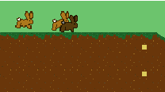
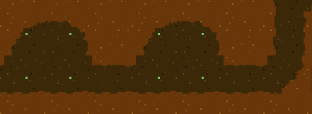
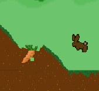
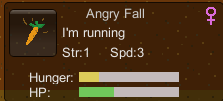

You play a group of rabbits trying to survive. You decide to build your warren near a nice farm, but beware, it's not as safe here as it looks.
You begin with 4 rabbits.
To set a dirt square for digging left click. A yellow dot appears indicating that this square is set to be dug up. You can also right click to fill in a square. Rabbits that are set to burrow(see Rabbits) will look for squares marked for digging and dig them up. Rabbits sleep, store food, eat, and mate in burrows. A burrow is a tunnel area that is exactly 2 squares high and at least 2 squares long. Green dots will appear to indicate that a tunnel area is an active burrow.
 Similar to selecting a square for digging, you can left click a carrot to set it for foraging. A green dot appears indicating that this square is set to be foraged. Each carrot square has multiple carrots. Rabbits set to forage will go the the square and grab a number of carrots equal to their strength, then store it in a burrow to eat later. Rabbits cannot eat food that is not stored in a burrow. Once a carrot square is out of carrots it becomes a tunnel. The upper left shows how many carrots your rabbits have stored and how much room you have in burrows to store food.
If you look in the bottom right you can see an information box telling you about the rabbit you have selected.
Some things you can see here:
Use the Tab key to switch between your rabbits. The currently selected rabbit will appear darker. Use the button to switch the rabbit's current action between burrowing, foraging, and guarding. Burrowers will dig up squares marked for digging. Foragers will fetch food from carrot squares marked for foraging. Rabbits set to guard will run to the safety of the burrow and hide. Rabbits that cannot reach a selected square will give up on it. If your rabbits are not digging or foraging make sure they have the right action selected and that they have a path to the square. Rabbits can die from starvation, being eaten, or not getting enough sleep. Make sure the rabbits have burrows or they will not be able to store food, eat, sleep, or mate. The upper left shows you how many rabbits you have and how much room is available in your burrows to house them.
The upper left has an image indicating the current season. As the seasons change sometimes enemies will appear to eat your rabbits.